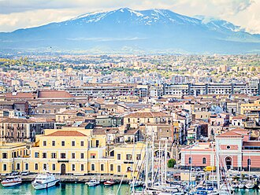
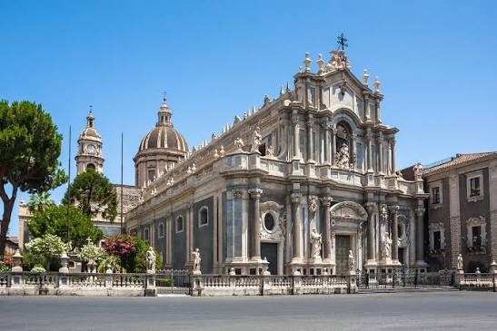
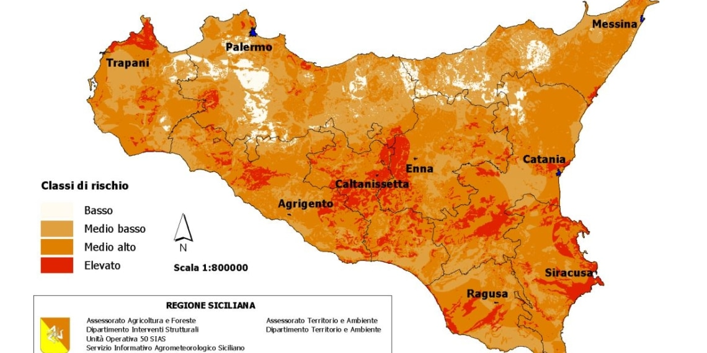

Catania (afi: /kaˈtanja/[7], ascoltaⓘ, Catania in siciliano, Cateunia in gallo-italico di Sicilia, afi: [kaˈtɛu̯nja][8]) è un comune italiano di 296 602 abitanti[3], capoluogo dell'omonima città metropolitana in Sicilia; la "città etnea" è il decimo comune italiano per popolazione, il secondo dell'Isola e il primo fra i non capoluoghi di Regione. È il centro dell'area metropolitana più densamente popolata della Sicilia, e di una più ampia conurbazione nota come Sistema lineare della Sicilia orientale[9]. La città è inoltre il fulcro economico e infrastrutturale del Distretto del Sud-Est Sicilia, istituito il 26 febbraio 2014[10] alla presenza dell'allora presidente della Repubblica Italiana Giorgio Napolitano, è sede dell'Aeroporto di Catania-Fontanarossa "Vincenzo Bellini", quinto in Italia per traffico passeggeri. Fondata nel 729 a.C. dai greci calcidesi della vicina Naxos, la città vanta una storia millenaria i cui resti ne arricchiscono il patrimonio artistico, architettonico e culturale[11]. Fu un'importante città romana e poi greco-bizantina fino al 900, quando venne conquistata dagli arabi e poi successivamente dai normanni. Sotto la dinastia aragonese fu capitale del Regno di Sicilia, e dal 1434 per volere del re Alfonso V è sede della più antica Università dell'isola[12]. Nel corso della sua storia è stata più volte interessata da eruzioni vulcaniche (la più imponente, in epoca storica, è quella del 1669) e da terremoti (i più catastrofici ricordati sono stati quelli del 1169 e del 1693). Il barocco del suo centro storico è stato dichiarato dall'UNESCO Patrimonio dell'umanità, assieme a quello di sette comuni del Val di Noto (Caltagirone, Militello in Val di Catania, Modica, Noto, Palazzolo Acreide, Ragusa e Scicli), nel 2002. Per l'ingenza e la conservazione del patrimonio architettonico e culturale liberty catanese, la città ha ricevuto nel 2016 il premio di Best LibertyCity ("Miglior città dell'Art Nouveau" o "città liberty dell'anno") dall'Associazione nazionale Italia Liberty.[13][14][15][16][17][18] Nel 2025 è stata insignita del premio Città italiana dei giovani, promosso dal Consiglio Nazionale dei Giovani che ha voluto premiare la città etnea per il progetto Nict Nact / VolcaNict a sostegno delle iniziative politiche per le nuove generazioni.[19]

Catania offre paesaggi eterogenei concentrati in un'area ristretta. Sorge sulla costa orientale dell'isola, ai piedi dell'Etna (il vulcano attivo più alto d'Europa) a circa metà strada tra le città di Messina e Siracusa, affacciandosi sul mar Ionio con il golfo che da essa prende il nome. Il territorio è prettamente pianeggiante a sud e sud-est, e montuoso a nord per la presenza dell'Etna. Esso comprende anche una consistente parte della piana di Catania ('a Chiana), una tra le più estese aree coltivate della Sicilia, la cui zona più vicina al mare costituisce l'Oasi del Simeto, riserva naturale di circa 2.000 ettari, istituita nel 1984. L'Oasi del Simeto prende nome dal fiume Simeto che sfocia a sud della città, nella frazione Primosole (VI Municipio "San Giorgio Librino - San Giuseppe La Rena Zia Lisa Villaggio Sant'Agata"). Il nucleo originario della città era situato su un'altura: la collina di Monte Vergine (49 m s.l.m.), nata da un'eruzione preistorica dell'Etna datata tra 15 000 e 3 960 ± 60 anni dal presente[fonte?], corrispondente all'odierna Piazza Dante Alighieri dove sorge il monastero di San Nicolò l'Arena (diventata sede universitaria), nei pressi della quale scorreva un corso d'acqua, l'Amenano, che sfociava vicino a Piazza del Duomo, mentre a sud vi era il terrazzo di Acquicella (15 m s.l.m.), separato dal fiume da una valle, poi colmata dalle lave dell'eruzione del 1669. L'unico altro rilievo importante è la collina di Santa Sofia (303 m s.l.m.), nel quartiere omonimo, dove sorge la Cittadella Universitaria, quasi al confine con Gravina di Catania, comune del vasto hinterland. Il verde pubblico è costituito dai parchi situati all'interno della città (le aeree verdi sono 20[20]). Sono sei quelli di una certa grandezza e importanza: il Giardino Bellini o Villa Bellini, chiamato 'a Villa, è dedicato al musicista Vincenzo Bellini; il Giardino Pacini o Villa Pacini, soprannominato Villa 'e varagghi (cioè "degli sbadigli") dedicato al musicista Giovanni Pacini; il Parco Gioeni (situato a nord del quartiere Borgo, alla fine della via Etnea, tra i più estesi); il Parco Falcone e Borsellino (a nord del corso Italia), dedicato agli omonimi magistrati uccisi dalla mafia; e il Boschetto della Plaia (il maggiore per estensione, nella zona tra il sud della città e l'aeroporto Vincenzo Bellini, l'ex Mercato Ortofrutticolo Comunale e il quartiere della Plaia). Tra gli altri, per l'importanza storica e per la conservazione della biodiversità, va segnalato l'orto botanico di Catania nel quartiere Mercede (III Municipio "Borgo Sanzio"). La città è attraversata da un fiume sotterraneo, il già citato Amenano, che anticamente sfociava dove c'è la suddetta Villa Pacini[fonte?] e nel ventunesimo secolo sfocia più a sud-est, dove c'è il porto. Esso si rende visibile alla Fontana dell'Amenano, fontana in marmo bianco chiamata dai catanesi l'Acqua a 'llinzolu che sorge tra la cosiddetta "Pescheria" e la piazza del Duomo, e nei sotterranei del locale Ostello Agorà. In passato, fino al 1669, poco fuori dalle mura a ovest si trovava una piccola zona umida naturale, nota con il nome di Gurna di Nicito[21], probabilmente alimentata da un corso d'acqua[ipotesi senza fonti bibligr. specialistiche]: l'area, oggi scomparsa, è stata coperta dalla colata lavica del 1669[22]. Sebbene la toponomastica locale conservi la memoria di questo ambiente nel nome di via Lago di Nicito, il perimetro esatto e l'ubicazione dell'area restano incerti. Ma è stato tutto il territorio circostante a mutare profondamente in seguito a calamità naturali come le varie colate laviche: la costa a nord del porto è costituita da una scogliera, sita dove è presente la Stazione Centrale, detta dell'Armìsi e formata in varie epoche storiche nel 1169, 1329 e 1381, anno in cui venne coperto anche parte dell'antico Porto Ulisse nel quartiere Ognina; tale tratto di costa comprende la spiaggetta di San Giovanni li Cuti. L'area a sud del Castello Ursino, che in origine si affacciava direttamente sul mare dal promontorio meridionale di Catania, è oggi il risultato della grande colata lavica del 1669 indicata sopra[22]. Durante l'eruzione, la colata superò le mura della città, si accumulò progressivamente intorno al Castello e iniziò a colmare il fossato che circondava l'edificio[22], oltrepassando anche i dintorni del bastione noto con il nome di Baluardo di San Giorgio[22]. Fra maggio e giugno, la lava raggiunse quasi l'altezza delle finestre del Castello, che vennero murate per protezione[22], e il flusso principale si riversò in mare formando un delta lavico di circa 1500 metri di estensione e spostando in avanti la linea di costa di circa 800 metri[22]. Questo processo modificò radicalmente la conformazione costiera, isolando il Castello dalla riva e innalzando il livello del terreno circostante di molti metri[22]. Di conseguenza, la linea di spiagge sabbiose della Plaja, oggi nota area balneare, iniziò più a sud rispetto al tracciato precedente, sviluppandosi sul nuovo terreno creato dalla solidificazione della lava con la copertura o il riassorbimento delle precedenti zone umide e delle spiagge naturali.